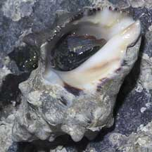
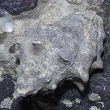
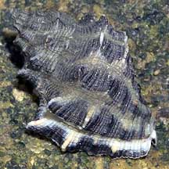
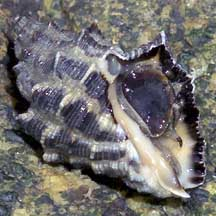
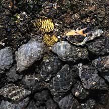
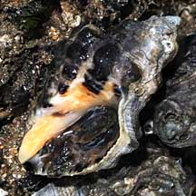
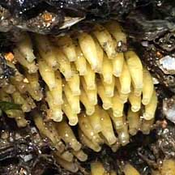
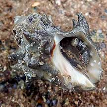
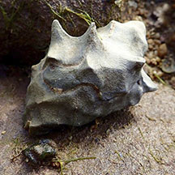

|
|
| shelled snails text index | photo index |
| Phylum Mollusca > Class Gastropoda > Family Muricidae |
| Chunky
drills Thais sp.* Family Muricidae updated Aug 2020 Where seen? This heavy thick-shelled drill is often seen on large boulders and seawalls. Commonly seen on our all our shores. Features: 3-6cm. Shell thick and chunky with variable patterns, some with a spiral pattern of squarish bumps, some with blunt spines. Shell opening wide. The operculum is brown. Various species of Thais commonly seen on our shores have this kind of shells. They are difficult to distinguish with certainty in the field. On this website, they are grouped by external features for convenience of display. |
 Tuas, Feb 07  |
 St. John's Island, May 07  |
 Sisters Island, Aug 07  Pulau Ubin, Dec 09 |
| Drill Babies: Some drills lay clusters of bright yellow egg capsules on hard surfaces. The egg capsules turn purple when the free-swimming larvae hatch. |
|
 Chek Jawa, Apr 08 |
 |
 |
*Species are difficult to positively identify without close examination.
On this website, they are grouped by external features for convenience of display.
| Chunky drills on Singapore shores |
On wildsingapore
flickr
|
| Other sightings on Singapore shores |
 Sentosa Serapong, Dec 20 Photo shared by Vincent Choo on facebook. |
 Pulau Tekukor, Jun 16 Photo shared by Ian Siah on facebook. |